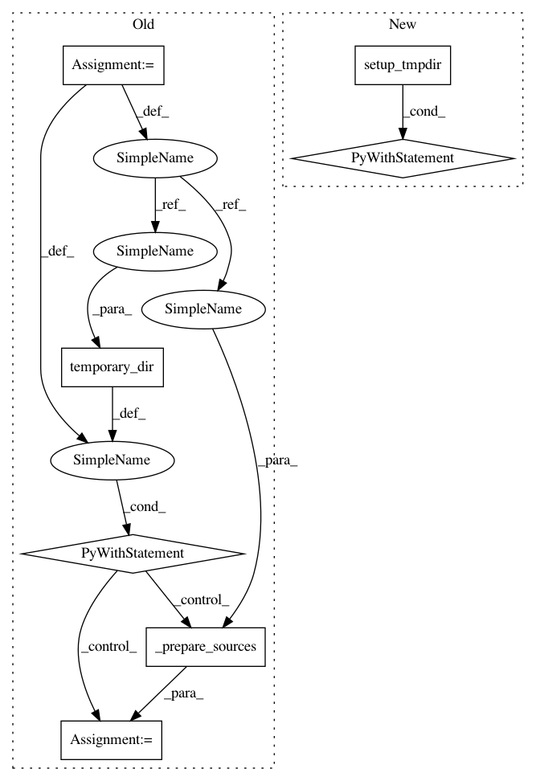

f7b260e965e277d62d2f54847671d06b1763fb21,src/python/pants/backend/python/rules/coverage_integration_test.py,CoverageIntegrationTest,test_coverage_html_xml_json,#CoverageIntegrationTest#,222
Before Change
self._assert_raw_coverage(result, build_root)
def test_coverage_html_xml_json(self) -> None:
build_root = get_buildroot()
with temporary_dir(root_dir=build_root) as tmpdir:
tmpdir_relative = self._prepare_sources(tmpdir, build_root)
result = self._run_tests(
tmpdir_relative, "--coverage-py-report=["xml", "html", "json"]"
)
coverage_path = Path(build_root, "dist", "coverage", "python")
assert coverage_path.exists() is True
assert "Wrote xml coverage report to `dist/coverage/python`" in result.stderr
xml_coverage = coverage_path / "coverage.xml"
assert xml_coverage.exists() is True
assert "Wrote html coverage report to `dist/coverage/python`" in result.stderr
html_cov_dir = coverage_path / "htmlcov"
assert html_cov_dir.exists() is True
assert (html_cov_dir / "index.html").exists() is True
assert "Wrote json coverage report to `dist/coverage/python`" in result.stderr_data
json_coverage = coverage_path / "coverage.json"
assert json_coverage.exists() is True
After Change
}
def test_coverage_html_xml_json(self) -> None:
with self.setup_tmpdir(self.sources) as tmpdir:
result = self.run_coverage(tmpdir, "--coverage-py-report=["xml", "html", "json"]")
coverage_path = Path(get_buildroot(), "dist", "coverage", "python")
assert coverage_path.exists() is True
assert "Wrote xml coverage report to `dist/coverage/python`" in result.stderr
In pattern: SUPERPATTERN
Frequency: 3
Non-data size: 7
Instances
Project Name: pantsbuild/pants
Commit Name: f7b260e965e277d62d2f54847671d06b1763fb21
Time: 2020-08-23
Author: 14852634+Eric-Arellano@users.noreply.github.com
File Name: src/python/pants/backend/python/rules/coverage_integration_test.py
Class Name: CoverageIntegrationTest
Method Name: test_coverage_html_xml_json
Project Name: pantsbuild/pants
Commit Name: f7b260e965e277d62d2f54847671d06b1763fb21
Time: 2020-08-23
Author: 14852634+Eric-Arellano@users.noreply.github.com
File Name: src/python/pants/backend/python/rules/coverage_integration_test.py
Class Name: CoverageIntegrationTest
Method Name: test_coverage_raw
Project Name: pantsbuild/pants
Commit Name: f7b260e965e277d62d2f54847671d06b1763fb21
Time: 2020-08-23
Author: 14852634+Eric-Arellano@users.noreply.github.com
File Name: tests/python/pants_test/integration/log_output_integration_test.py
Class Name: LogOutputIntegrationTest
Method Name: test_completed_log_output